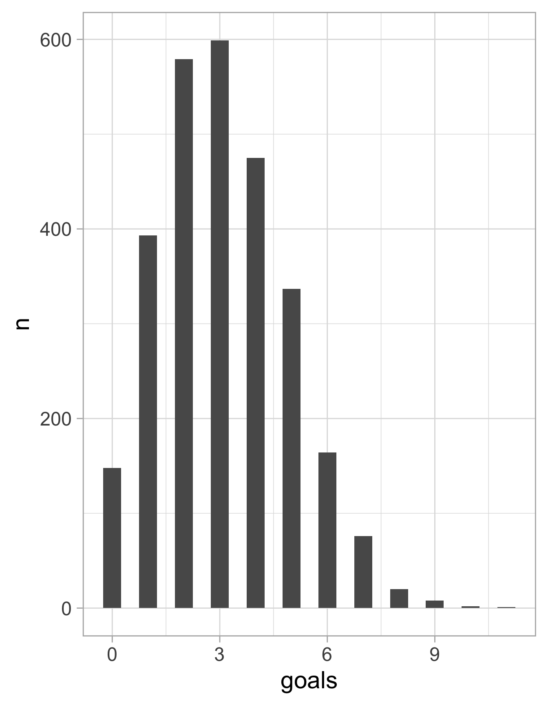
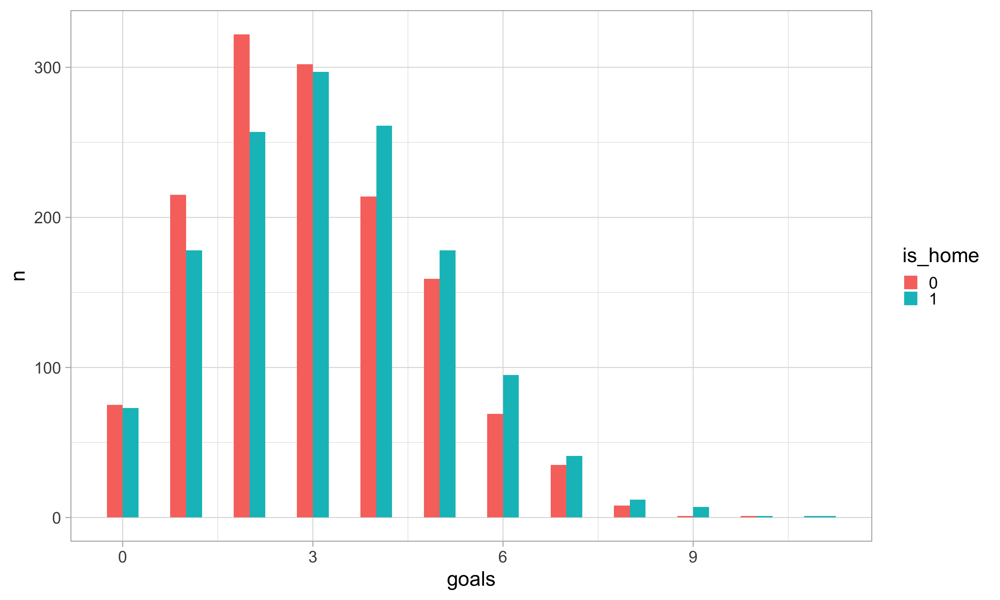
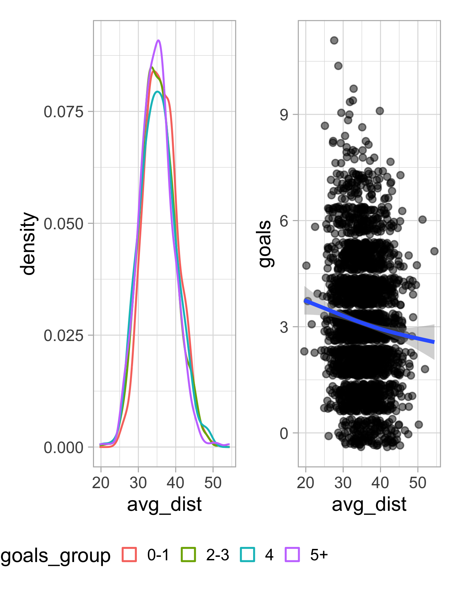
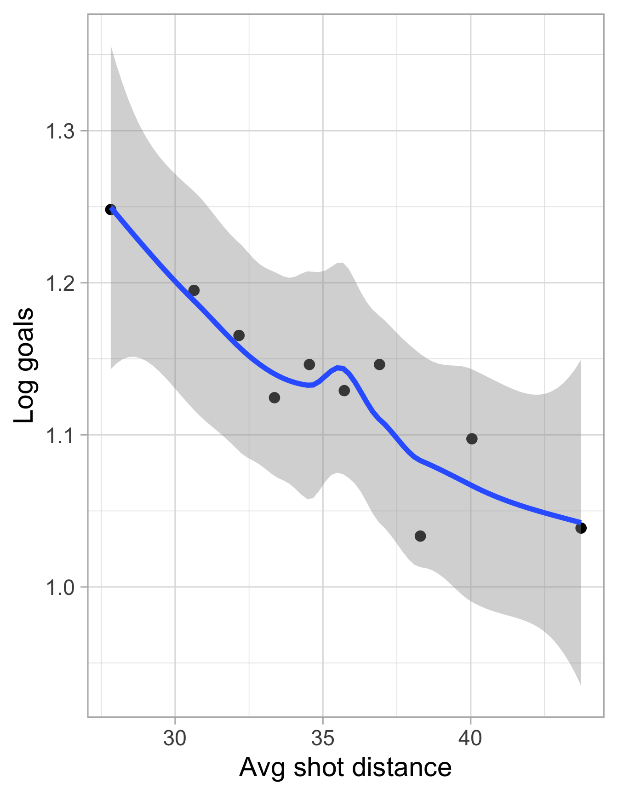
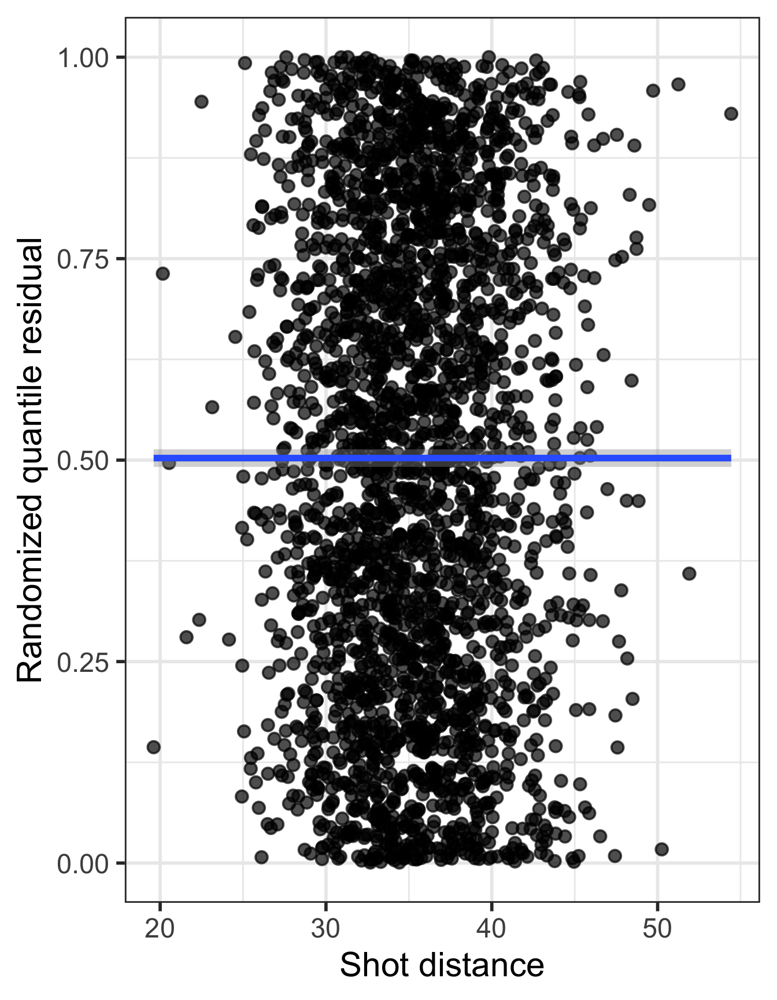

Supervised Learning: Generalized Linear Models
Background
Recap
- When the response is continuous, we can use linear regression
. . .
- When the response is binary categorical, we can use logistic regression
. . .
- Which model do we use if the response contains discrete counts?
Generalized linear models (GLMs)
Two components of a GLM
1. Systematic component: The systematic part describes the relationship between the mean of \(Y\) and some linear combination of the predictors
. . .
2. Random component (distribution of the response): The random part describes the distribution of \(Y\) around that mean
Link function
The systematic part of the GLM describes the relationship between the mean of \(Y\) and some function of \(\beta_0 + \beta_1 X_1 + \dots + \beta_p X_p\).
Specifically, the systematic part is of the form
\[g(\mathbb{E}[Y \mid X = x]) = \beta_0 + \beta_1 X_1 + \dots + \beta_p X_p\]
where \(g\) is known as the link function.
. . .
- For instance, in logistic regression, \(g\) was the logit function
. . .
- The random part gives the distribution of \(Y\) as an exponential family distribution
. . .
- If \(Y\) is drawn from an exponential dispersion family distribution with natural parameter \(\theta\), the canonical link for that distribution is the function such that \(g(\mathbb{E}[Y|X=x]) = \theta\).
Linear regression
- \(Y \sim N(\mu, \sigma ^2)\)
. . .
- Linear predictor: \(\beta_0 + \beta_1 X_1 + \dots + \beta_p X_p\)
. . .
- Identity link function: \(g(\mu) = \mu\)
Logistic regression
- \(Y \sim \text{Binomial}(n,p)\)
. . .
- Linear predictor: \(\beta_0 + \beta_1 X_1 + \dots + \beta_p X_p\)
(Recall: We cannot just simply model \(p = \beta_0 + \beta_1 X_1 + \dots + \beta_p X_p\) since the binary response can only take on values of either 0 or 1)
. . .
- Logit link function: \(\displaystyle g(p) = \log\left(\frac{p}{1-p}\right)\)
\[\log \left( \frac{p(x)}{1 - p(x)} \right) = \beta_0 + \beta_1 x_1 + \cdots + \beta_p x_p\]
\[\frac{p(x)}{1 - p(x)} = \exp(\beta_0 + \beta_1 x_1 + \cdots + \beta_p x_p) \]
\[p(x) = \frac{\exp(\beta_0 + \beta_1 x_1 + \cdots + \beta_p x_p)}{1 + \exp(\beta_0 + \beta_1 x_1 + \cdots + \beta_p x_p)} = \frac{1}{1 + \exp(-(\beta_0 + \beta_1 x_1 + \cdots + \beta_p x_p))}\]
Poisson regression
- \(Y \sim \text{Poisson}(\lambda)\) where \(\lambda = E[Y|X=x]\)
. . .
- Linear predictor: \(\beta_0 + \beta_1 X_1 + \dots + \beta_p X_p\)
(We cannot just simply model \(\lambda = \beta_0 + \beta_1 X_1 + \dots + \beta_p X_p\) since the Poisson mean parameter must be positive)
. . .
- Log link function: \(\displaystyle g(\lambda) = \log (\lambda)\)
\[\log(\lambda) =\beta_0 + \beta_1 X_1 + \dots + \beta_p X_p\] \[\lambda = \exp(\beta_0 + \beta_1 X_1 + \dots + \beta_p X_p)\]
which guarantees \(\lambda >0\).
Generalization example
In linear regression, the distribution is normal and the domain of \(Y \mid x\) is \((-\infty,\infty)\)
. . .
What, however, happens if we know that
the domain of observed values of the response is actually \([0,\infty]\)
the observed values are discrete, with possible values \(0, 1, 2, \dots\)
. . .
The normal distribution doesn’t hold here
Which distribution could possibly govern \(Y \mid x\)?
Remember, we might not know truly how \(Y \mid x\) is distributed, but any assumption we make has to fit with the nature of the data
Generalization: Poisson regression
- PMF of a Poisson distribution: \(\displaystyle f(x \mid \lambda)= \frac{ e^{-\lambda} \lambda^x}{x!}\); \(x = 0, 1, 2, \dots\) and \(\lambda > 0\)
. . .
- Model for the counts of an event in a fixed period of time or space, with a rate of occurrence (intensity) parameter \(\lambda\)
. . .
\(\lambda\) is both the mean and the variance of the distribution
- in general, the variance governs the distribution’s shape
distribution of independent event occurrences in an interval, e.g. soccer goals in a match
\(\lambda\) is the average number of the events in an interval
So, when we apply GLM in this context, we would identify the family as Poisson
But there’s another step in generalization…
Generalization: link function
Start with one predictor, linear function: \(\beta_0 + \beta_1 x\)
. . .
Range of this function: \((-\infty,\infty)\)
But for Poisson regression, \(Y\) cannot be negative,
We need to transform the linear function to be \([0,\infty)\)
(What if we use linear regression? Results may not be meaningful, e.g., we predict \({\hat Y}\) to be negative!)
. . .
There is usually no unique transformation, but rather conventional ones
Generalization: link function
For Poisson, we use the \(\log()\) function as the link function \(g()\):
\[g(\lambda \mid x) = \log(\lambda \mid x) = \beta_0 + \beta_1 x\]
(Hence we also call this a log-linear model)
. . .
Given \(Y\) with values limited to being either 0 or positive integers, with no upper bound, we
assume \(Y \mid x \sim \text{Poisson}(\lambda)\)
assume \(\lambda \mid x = e^{\beta_0 + \beta_1 x}\)
use optimization to estimate \(\beta_0\) and \(\beta_1\) by maximizing the likelihood function
More distributions
\(Y \mid x\) continuous, but bounded between 0 and \(\infty\)
Application: modeling continuous, positive, and (right) skewed response
Finance: modeling insurance claim severity
Environmental science: modeling rainfall

More distributions
\(Y \mid x\) continuous, but bounded between 0 and 1
Application: modeling proportions (see here for an example)
Amount of foreign aid a country receives as a percent of its GDP
Proportion of a population that received COVID-19 vaccine

Modeling count data
Game level shot information for the NHL 2021-2022 season, via the SCORE Sports Data Repository
library(tidyverse)
theme_set(theme_light())
scoring <- read_csv("https://raw.githubusercontent.com/36-SURE/2026/main/data/nhl_offense_2021.csv")
glimpse(scoring)Rows: 2,802
Columns: 8
$ game_id <dbl> 2021020001, 2021020001, 2021020002, 2021020002, 2021020003,…
$ event_team <chr> "Pittsburgh Penguins", "Tampa Bay Lightning", "Seattle Krak…
$ shots <dbl> 58, 55, 63, 58, 55, 64, 53, 48, 61, 70, 67, 66, 58, 54, 68,…
$ avg_dist <dbl> 34.45106, 41.99500, 34.34091, 35.07234, 35.58780, 34.63137,…
$ avg_angle <dbl> 29.69149, 25.62750, 33.07727, 29.58298, 31.37805, 26.01373,…
$ goals <dbl> 6, 2, 3, 4, 1, 2, 1, 5, 2, 4, 2, 2, 5, 1, 3, 2, 6, 7, 5, 4,…
$ is_home <dbl> 0, 1, 0, 1, 0, 1, 0, 1, 0, 1, 1, 0, 1, 0, 1, 0, 1, 0, 1, 0,…
$ division <chr> "Metropolitan", "Atlantic", "Pacific", "Pacific", "Atlantic…EDA: Distribution for the number of goals
scoring |>
count(goals) |>
ggplot(aes(goals, n)) +
geom_col(width = 0.5) 
EDA: Distribution for the number of goals by home/away team
scoring |>
count(goals, is_home) |>
mutate(is_home = factor(is_home)) |>
ggplot(aes(goals, n, fill = is_home, group = is_home)) +
geom_col(position = "dodge", width = 0.5)
EDA: Relationship between shot distance and goals
a <- scoring |>
mutate(goals_group = case_when(goals <2 ~ "0-1",
goals >= 2 & goals <=3 ~ "2-3",
goals == 4 ~ "4",
goals > 4 ~ "5+")) |>
ggplot(aes(x=avg_dist, color = goals_group))+
geom_density()+
theme(legend.position = "bottom")
b <- scoring |>
ggplot(aes(x=avg_dist, y = goals))+
geom_point(position = "jitter", alpha=0.5)+
geom_smooth()
library(patchwork)
a+b
Fitting a poisson regression model
What observations in the dataset correspond to predictions using only the intercept?
goals_poisson <- glm(goals ~ division + is_home + avg_dist, family = "poisson", data = scoring)
# summary(goals_poisson)
# scoring <- scoring |> mutate(division = fct_relevel(division, "Central")) # use to change the reference level
library(broom)
tidy(goals_poisson)# A tibble: 6 × 5
term estimate std.error statistic p.value
<chr> <dbl> <dbl> <dbl> <dbl>
1 (Intercept) 1.50 0.0874 17.1 8.04e-66
2 divisionCentral 0.0132 0.0299 0.441 6.59e- 1
3 divisionMetropolitan -0.0229 0.0303 -0.756 4.50e- 1
4 divisionPacific -0.0367 0.0305 -1.20 2.29e- 1
5 is_home 0.0819 0.0215 3.80 1.44e- 4
6 avg_dist -0.0112 0.00239 -4.68 2.88e- 6Fitting a poisson regression model
tidy(goals_poisson, exponentiate = TRUE, conf.int = TRUE)# A tibble: 6 × 7
term estimate std.error statistic p.value conf.low conf.high
<chr> <dbl> <dbl> <dbl> <dbl> <dbl> <dbl>
1 (Intercept) 4.47 0.0874 17.1 8.04e-66 3.77 5.31
2 divisionCentral 1.01 0.0299 0.441 6.59e- 1 0.956 1.07
3 divisionMetropolitan 0.977 0.0303 -0.756 4.50e- 1 0.921 1.04
4 divisionPacific 0.964 0.0305 -1.20 2.29e- 1 0.908 1.02
5 is_home 1.09 0.0215 3.80 1.44e- 4 1.04 1.13
6 avg_dist 0.989 0.00239 -4.68 2.88e- 6 0.984 0.994. . .
One foot of average shot distance further from the net is associated with the mean number of goals being multiplied by 0.988 [95% CI(0.984, 0.993)].
The expected number of goals changes (is multiplied) by a factor of 1.085 (95% CI [1.04, 1.13]) if the team is home in comparison to away teams, after accounting for shot distance and division.
Deviance test
Often used for testing null that
- a relationship is linear rather than quadratic or cubic
- a continuous predictor’s relationship with the response is identical regardless of the level of a factor predictor with several levels
- simply testing null that several specific predictors are not associated with the response
The deviance difference is a likelihood ratio statistic. Likelihood ratio statistics are asymptotically chi-square, so this test has a chi-squared distribution.
Deviance test
fit_league <- glm(goals ~ division + is_home + avg_dist, family = "poisson", data = scoring)
fit_simple <- glm(goals ~ is_home + avg_dist, family = "poisson", data = scoring)
anova(fit_simple, fit_league, test = "Chisq")Analysis of Deviance Table
Model 1: goals ~ is_home + avg_dist
Model 2: goals ~ division + is_home + avg_dist
Resid. Df Resid. Dev Df Deviance Pr(>Chi)
1 2799 3162.6
2 2796 3159.4 3 3.2622 0.3529A deviance test comparing our model with a reduced model fit solely with average shot distance and home advantage does not provide evidence that division is associated with number of goals scored.
Checking the assumptions
Poisson regression makes 3 assumptions:
- The observations are conditionally independent, given \(X\).
- Check with domain knowledge!
- The response variable follows the poisson distribution.
- Check with a histogram (EDA)!
- The mean of the response is related to the predictors through the chosen link function: we want a linear relationship between the predictor and the log of the outcome (either rate or count).
Check with empirical link plot in EDA or with residuals after fitting model.
Doesn’t apply to factor variables
- the model estimates a separate mean (or effect) for each category, so there is no underlying numeric scale on which a linear relationship could be assumed or violated.
Checking the assumptions with an empirical link plot
library(regressinator)
scoring |>
bin_by_quantile(avg_dist, breaks = 10) |>
summarize(
mean_avg_dist = mean(avg_dist),
log_goals = empirical_link(
goals,
family = poisson(link = "log"),
n = n()
)) |>
ggplot(aes(x = mean_avg_dist, y = log_goals)) +
geom_point()+
geom_smooth() +
labs(x = "Avg shot distance", y = "Log goals")
Checking with randomized quantile residuals
In short, randomized quantile residuals deal with the patterns produced by discrete response variables by calculating the CDF for each observation.
augment_quantile(goals_poisson) %>%
ggplot(aes(x=avg_dist, y = .quantile.resid))+
geom_point(alpha=0.7)+
theme_bw(base_size = 22)+
labs(x="Shot distance", y="Randomized quantile residual")+
geom_smooth()
Model residuals and goodness-of-fit measures
Pearson residuals: \(\displaystyle r_i = \frac{y_i-\hat{\lambda}_i}{\sqrt{\hat{\lambda}_i}}\)
Deviance residuals: \(\displaystyle d_i = \textrm{sign}(y_i-\hat{\lambda}_i) \sqrt{2 \left[y_i \log\left(\frac{y_i}{\hat{\lambda}_i}\right) -(y_i - \hat{\lambda}_i) \right]}\)
residuals(goals_poisson, type = "pearson")
residuals(goals_poisson, type = "deviance")- Model summaries
glance(goals_poisson)# A tibble: 1 × 8
null.deviance df.null logLik AIC BIC deviance df.residual nobs
<dbl> <int> <dbl> <dbl> <dbl> <dbl> <int> <int>
1 3204. 2801 -5494. 11000. 11036. 3159. 2796 2802As before, we prefer assessment in terms of out-of-sample/test set performances over these measures
Poisson offset
- The count of a particular unit might vary based on population or amount of time.
. . .
Examples of when to use an offset
modeling number of arrested insurrectionists by county (population offset)
counting bird species in varies forests (size of forest or time spent birding offset)
. . .
Why not just include this as a variable?
In the situations above, interpreting with counts doesn’t make much sense
Including the variable as an offset constrains the model to predict rates rather than raw counts by fixing its coefficient to 1
Poisson offset
For hockey data: should we include shots as a offset? Depends on what question you are trying to answer.
Using shots as an offset: Do division, home ice, and average shot distance affect a team’s goal-scoring rate per shot?
Using shots as a predictor: Holding division, home ice, and average shot distance constant, how does generating more shots affect expected goals?
goals_offset <- glm(goals ~ division + is_home + avg_dist,
offset = log(shots), # include with coefficient 1
data = scoring, family = poisson(link = "log"))
tidy(goals_offset, exponentiate = T)# A tibble: 6 × 5
term estimate std.error statistic p.value
<chr> <dbl> <dbl> <dbl> <dbl>
1 (Intercept) 0.0694 0.0885 -30.1 1.12e-199
2 divisionCentral 1.04 0.0299 1.22 2.22e- 1
3 divisionMetropolitan 0.977 0.0303 -0.754 4.51e- 1
4 divisionPacific 0.928 0.0305 -2.44 1.46e- 2
5 is_home 1.03 0.0215 1.25 2.12e- 1
6 avg_dist 0.993 0.00243 -2.87 4.12e- 3A 10-foot increase in average shot distance is associated with approximately a \(0.99306499^{10} = 0.933\) lower goal-scoring rate per shot, holding division and home ice constant.
Overdispersion
- Overdispersion is a common problem faced in Poisson regression when the variance is larger than what is assumed under the model
. . .
- Recall that a Poisson distribution assumes equidispersion (i.e. the mean and variance are equal)
. . .
- Any concerns here?
var(scoring$goals)[1] 3.182643mean(scoring$goals)[1] 3.109208Negative binomial regression
Key idea: introduces another parameter such that the variance can exceed the mean
. . .
We have \(E(Y) = \lambda\) and \(\text{Var}(Y)=\lambda(1+\alpha \lambda)\)
. . .
- The variance is still proportional to \(\lambda\), but depends on the dispersion parameter \(\alpha \ge 0\)
. . .
- The further \(\alpha\) falls above 0, the greater the overdispersion relative to Poisson variability
. . .
- As \(\alpha\) decreases toward 0, the variance decreases toward \(\lambda\) , and the model converges to a Poisson distribution
. . .
See here for more information
Negative binomial regression
goals_nb <- MASS::glm.nb(goals ~ division + is_home + avg_dist, data = scoring)
summary(goals_nb)
Call:
MASS::glm.nb(formula = goals ~ division + is_home + avg_dist,
data = scoring, init.theta = 415.9359625, link = log)
Coefficients:
Estimate Std. Error z value Pr(>|z|)
(Intercept) 1.49745 0.08772 17.071 < 2e-16 ***
divisionCentral 0.01320 0.03004 0.440 0.660255
divisionMetropolitan -0.02286 0.03039 -0.752 0.452029
divisionPacific -0.03669 0.03064 -1.197 0.231123
is_home 0.08185 0.02162 3.786 0.000153 ***
avg_dist -0.01119 0.00240 -4.661 3.15e-06 ***
---
Signif. codes: 0 '***' 0.001 '**' 0.01 '*' 0.05 '.' 0.1 ' ' 1
(Dispersion parameter for Negative Binomial(415.936) family taken to be 1)
Null deviance: 3182.3 on 2801 degrees of freedom
Residual deviance: 3138.4 on 2796 degrees of freedom
AIC: 11002
Number of Fisher Scoring iterations: 1
Theta: 416
Std. Err.: 1535
Warning while fitting theta: alternation limit reached
2 x log-likelihood: -10987.88 Zero-inflated Poisson regression
- One common problem in modeling count data is the prevalence of zeros
. . .
- While the Poisson distribution allows for zero counts, there are problems with a lot more zeros observed than expected for Poisson data
. . .
A zero-inflated Poisson (ZIP) model is a mixture model with two components
Logistic regression model to predict whether the response will be zero (whether 0 goals are observed) \[P(Y = 0) = \pi + (1 - \pi)e^{\lambda}\]
Poisson regression model for non-zero counts (non-zero goal values) \[P(Y = y) = (1 - \pi) \frac{\lambda^y e^{-\lambda}}{y!}, \text{ for } y = 1, 2, 3, \dots\]
More on modeling with GLMs
- GLMs are a big topic! We’ve only fully worked through an example of the poisson. Other response distributions follow similar ideas but have their own nuances.
. . .
- Binomial regression: used with binary outcomes where there is a fixed and known total number of trials.
- Each observation consists of a number of successes and a total number of trials; the number of trials may differ between observations
. . .
Gamma regression: Strictly positive, continuous data that are right-skewed, where the variance increases with the mean.
- Tweedie regression: Continuous data with a high density of exact zeros (e.g., insurance claim payouts where many people file $0, but some file large amounts).
. . .
Feel free to explore more or ask us questions!
Resources
Appendix: Code to build dataset
hockey <- read_csv("https://raw.githubusercontent.com/36-SURE/2026/main/data/nhl-shots-2021.csv")
summary <- hockey |>
group_by(game_id, event_team, home_name) |>
summarize(goals_home = max(home_score), goals_away = max(away_score), shots = n(), avg_dist = mean(shot_distance, na.rm=T), avg_angle = mean(shot_angle, na.rm=T)) |>
mutate(goals = case_when(home_name == event_team ~ goals_home,
TRUE ~ goals_away),
is_home = case_when(event_team == home_name ~ 1,
TRUE ~ 0)) |>
dplyr::select(-goals_home, -goals_away, -home_name) |>
mutate(division = case_when(event_team %in% c("Boston Bruins", "Buffalo Sabres", "Detroit Red Wings", "Florida Panthers", "Montréal Canadiens", "Ottawa Senators", "Tampa Bay Lightning", "Toronto Maple Leafs") ~ "Atlantic",
event_team %in% c("Carolina Hurricanes", "Columbus Blue Jackets", "New Jersey Devils", "New York Islanders", "New York Rangers", "Philadelphia Flyers", "Pittsburgh Penguins", "Washington Capitals" ) ~ "Metropolitan",
event_team %in% c("Arizona Coyotes", "Chicago Blackhawks", "Colorado Avalanche", "Dallas Stars", "Minnesota Wild", "Nashville Predators", "St. Louis Blues", "Winnipeg Jets") ~ "Central",
event_team %in% c("Anaheim Ducks", "Calgary Flames", "Edmonton Oilers", "Los Angeles Kings", "San Jose Sharks", "Seattle Kraken", "Vancouver Canucks", "Vegas Golden Knights") ~ "Pacific"))